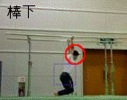
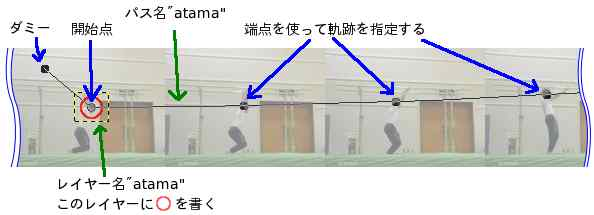
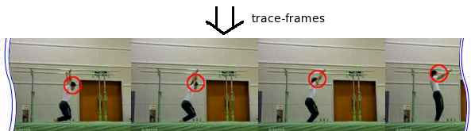

Trace Frames
trace-framesは、Gimp用の拙作スクリプトです。
MPlayerを使って作ったファイルを
Gimpで加工して、動くコメントや図形を追加した動画を作ることができます。
Gimp-1, Gimp-2どちらでも使えると思います。
要望、質問などはブログにお願いします。
尚、ここの説明は、trace-frames Ver 0.2を対象にしています。

Gimpの、GAPという動画を扱う為のプラグインでも似たことができるようですが、
多分、GAPでは、動画に追加した図を直線的にしか動かせないと思います。
それに、きっとtrace-framesの方が簡単です。
概要のみです。分かりにくい所は、cut-framesの使い方も参照して下さい。
- cut-framesと同様、MPlayerを使って、動画の各フレーム
をタイルにした画像を用意。
- 動画中に付け加えたいアイテム(動画中の一部を追って動く図や文字)用に、
透明のレイヤーを用意し、そのレイヤーに図や文字を書き込む。
例: 頭の位置を○で囲んで追いかけたいなら、
○を付ける最初のフレームの頭の上に
適当な大きさの透明レイヤーを重ね、そこに○を
書く。
- パス作成ツールを選び、cut-framesと同様に、まず最初に
一つだけダミーのクリックを行う。
- 続いて、アイテムが動く軌跡を、cut-framesで切り出した画像
をレイヤーにして重ねる時と同様に、
ベジエ曲線の端点だけを使って指定していく。ベジエ曲線のコントロールの使い方
は、指定の仕方のバリエーション参照。
例: ダミーのクリックの後、先程の○の
真中をクリックして、最初の位置を指定し、
それ以降のフレームの頭の位置を順にクリックしていく。
- アイテムを書いたフレームと、その軌跡を指定するパスに同じ名前を付ける。
例: 頭用の○を書いたフレームと、
パス両方に、"atama"と言う名前を付ける
- アイテムを複数動かしたい時には、それぞれ、2,3,4,5と同じことをする
- 画像の右クリックメニューからScript-Fu →
Gymnp →
trace-frames
を選んで実行する。指定できるオプションは以下の通り:
- Frame Width, Frame Height
- フレームの幅と高さ。正しく指定しないと無茶苦茶になる
- Path Smoothing
- パス作成ツールで指定した点の補正をどの程度行うか。0なら補正なし
- Tile to Layer
- 新しく作った画像を、タイルのまま残すか、各フレーム毎に切り出して、
レイヤーにして重ねるか。ここをチェックしている時には、レイヤーにして重ねられるので、
そのままアニメーションGIFにするか、たむぶん版
continuous-saveを使って、MEncoder用の動画の元を作れる。
タイルのままにした時には、その後に、cut-framesを使って、切り出す範囲を指定したりする
ことができる。


以下は組み合わせることができます。
- 最初のフレームと最後のフレームだけ指定した時には、その間のフレーム全てに
動かないアイテムが書かれる
- 最初のフレームと最後のフレーム以外のフレームで、コントロールを引っ張り出した時には、
cut-framesと同様に、そのフレームがスムージングのキーフレームになる。(最初のフレームと
最後のフレームは、常にキーフレーム)
- 最初のフレームでコントロールを引っ張りだし、そのコントロールを中間のフレームのどこか
の上に置くと、最初のフレームから、コントロールで指定したフレームまで、アイテムが次第に浮き出てくる。もう一方のコントロールは無視
- 最後のフレームでコントロールを引っ張りだし、そのコントロールを中間のフレームのどこか
の上に置くと、コントロールで指定したフレームから最後のフレームまで、アイテムが
次第に薄れて良く。もう一方のコントロールは無視
trace-frames.scm(Gimp 2.4以降用)をを保存して、Gimp 2.8の場合なら、
- Unix系のOSの場合は "~/.gimp-2.8/scripts"
- Windowsの場合は "C:\Program Files\GIMP2\scripts"
にコピーして下さい。
- アイテムを回転させられると良いと思う。指定の仕方が問題。コントロールを使いたいけど、キーフレームの指定とごっちゃになる
- 端点が画像の外にあるときに、切り出しがおかしくなるバグの修正。当面、気にしない
- Ver 0.2 (2009.6.7)
-
- Gimp 2.4以降用に修正
- Ver 0.11 (2005.4.6)
-
- 薄くなって消えて行く時のバグを修正
- Ver 0.1 (2005.3.31)
-
- 公開
ホームへ
ブログへ